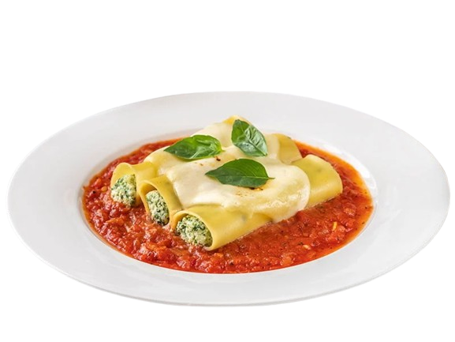
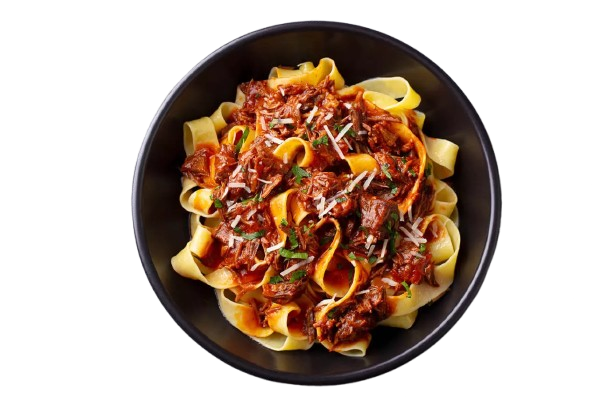

Sabores que atravessam gerações, preparados com ingredientes frescos e o calor de uma mesa que celebra a boa comida. Aqui, cada prato é feito com cuidado, cada detalhe é pensado, e cada momento é para ser lembrado.
Faça sua reserva

Nosso prato do dia é aquela massa caprichada com o toque mágico dos Três Queijos (Brie, Parmeggiano e Mozzarella di Bufala). Uma combinação cremosa, rica em sabor e com a textura perfeita para quem aprecia uma refeição memorável.
Feita com ingredientes selecionados e finalizada com um leve toque de manteiga e ervas frescas, essa massa promete uma experiência que conforta, encanta e surpreende a cada garfada.
Experimente hoje mesmo e sinta o sabor que faz a diferença.
Perfeito para o almoço, para renovar as energias, ou para um jantar especial. Bon appétit! 🍝✨
| Nome | Mesa | Horário | Pratos |
|---|---|---|---|
| João Nuquim | 07 | Lasanha à bolonhesa | |
| Gabriel Salude | Lasanha à bolonhesa | ||
| Miguel Grechen | 07 | Canelone à Bolonhesa | |
| Bernardo Mundi | 08 | Ravioli Três Queijos | |
| Fernando Macro | 01 | Ravioli Três Queijos | |
| Fechamos às 00h | |||

Fundado em 2016 por Joaquim Matias e Daniel Marcelo, nosso restaurante nasceu de um sonho simples: servir boa comida feita com carinho, ingredientes frescos e sabor de verdade.
Tudo começou de forma modesta, em uma pequena cozinha onde as primeiras receitas foram testadas, ajustadas e aperfeiçoadas com dedicação e respeito à tradição. Com o tempo, o que era apenas um projeto familiar ganhou vida, conquistou clientes e se tornou um ponto de encontro para quem valoriza boa comida, acolhimento e atmosfera agradável.
Hoje, seguimos preservando esses valores, honrando nossas origens e inovando com cuidado. Cada prato que chega à mesa carrega um pouco da nossa história, do nosso trabalho e da nossa paixão por servir bem.
Seja bem-vindo — aqui, você é da casa!

54 anos

47 anos